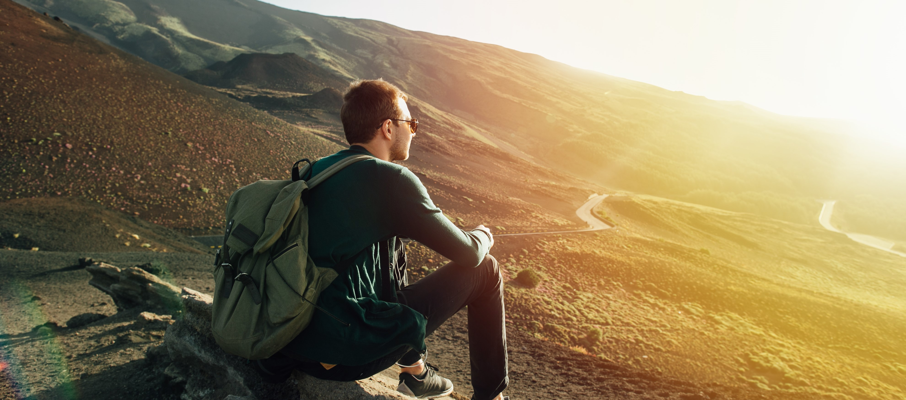

Yavi
En este pueblo puneño se destaca la antigua iglesia de San Francisco con su altar enchapado en oro y el museo histórico donde se recuerda la interesante historia del Marqués de Tojo.
Leer más Comentarios 20